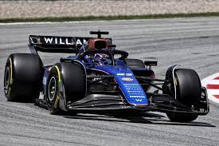

Williams is on a road to recovery with new investments and a renewed focus on performance. The team is determined to climb up the standings this season. With a new technical director at the helm, Williams has introduced several key upgrades to their car, including a more efficient aerodynamic package and a lighter chassis. These changes are expected to significantly improve the car's performance. In addition to the technical upgrades, Williams has also secured new sponsorship deals that will provide the financial backing needed to compete at the highest level. The team's drivers, Alex Albon and Logan Sargeant, have expressed their optimism about the upcoming season. "We've made some significant strides over the winter, and I believe we have a car that can compete for points on a regular basis," said Albon. The team's principal, Jost Capito, is also confident about the future. "Our goal is to consistently score points and move up the standings. We have a talented team and the right resources to make it happen," he stated. As the season opener approaches, Williams is focused on fine-tuning their car and ensuring that they are fully prepared for the challenges ahead.
